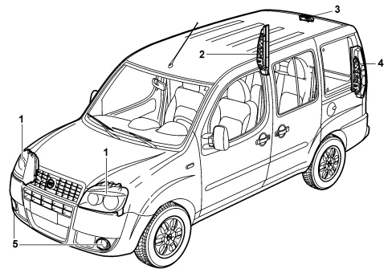
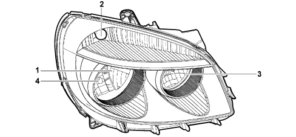
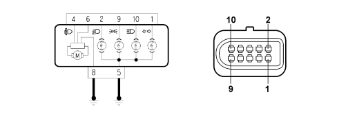
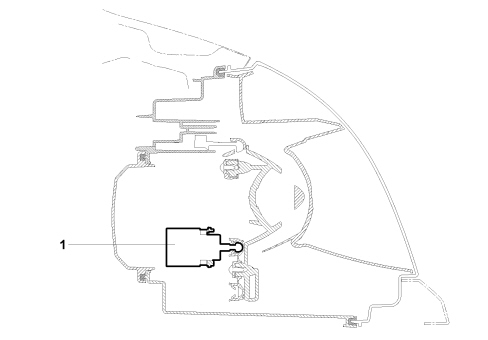
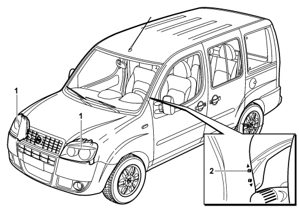
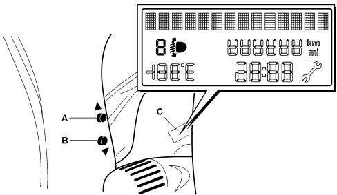
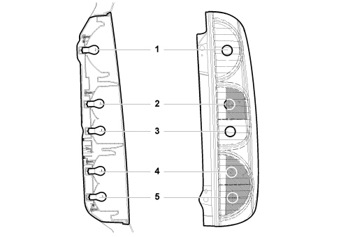
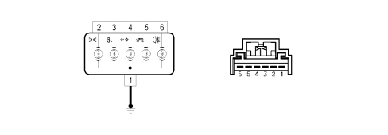
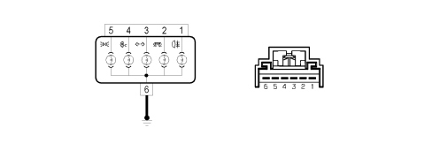
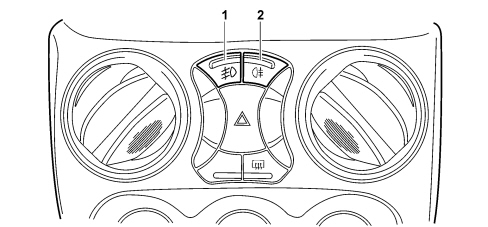

INTRODUCTION - EXTERIOR LIGHTING
- Path
- Descriptions > 55 ELECTRICAL EQUIPMENT > 5540 EXTERIOR LIGHTING > INTRODUCTION - EXTERIOR LIGHTING
- Kind
- system description
- Applies to
- engines: 1.4 8v, 1.6 16v, 1.3 JTD 16V, 1.9 JTD 8V; production: da 12/03; only with equipment: MY 2005
- Interactive page
- https://sloeber94.github.io/elrnDB-fDbl/en/#/223000252
Applies to: engines: 1.4 8v, 1.6 16v, 1.3 JTD 16V, 1.9 JTD 8V; production: da 12/03; only with equipment: MY 2005
INTRODUCTION
The vehicle exterior lighting has been designed with two main objectives in mind:
- Guaranteeing maximum efficiency with regard to the international regulations that define the lighting technology specifications for the various components.
- Being integrated with the design of the vehicle so that the various components enhance the image.
In particular the front light cluster incorporates the separate functions of the side light, dipped headlight, main beam headlight and direction indicators in a single unit.
The plastic lens cover is in one piece.
The geometry of the HCR lamp is an asymmetric crossover beam
LOCATION OF COMPONENTS ON VEHICLE
The exact location of the components on the vehicle is illustrated in the diagram below.

1 - Front light cluster
2 - Right rear light cluster
3 - Third brake light
4 - Left rear light cluster
5 - Fog lights
STRUCTURE
The front light cluster comprises the components described below.
An optical assembly including:
- A compartment for the dipped headlamp with the parabola and obstacle adjusted to the standards.
- A compartment for the direction indicator and orange reflector lens cover.
- A compartment for the main beam headlamp and parabola.
- A compartment for the side light and reflector lens cover.
A headlamp alignment adjustment device makes it possible to alter the angle of the headlamp parabolas with the driver adjusting the light beam direction at will.
This device is operated by two buttons located on the left side of the instrument panel.
The headlamp contains the following bulbs:
- A dipped headlamp bulb 12 Volt - 55 Watt (1)
- A bulb for the direction indicator 12 Volt - 21 Watt PY (2)
- A main beam headlamp bulb 12 Volt - 55 Watt (3)
- A side light bulb 12 Volt - 5 Watt (4)

1 - Dipped headlamp
2 - Direction indicator
3 - Main beam headlamp
4 - Side light
OPERATING PRINCIPLE
The side lights, dipped headlamps and main beam headlamps (in a stable position or flashing) can be switched on using the ring nut at the end of the left steering column switch unit lever.
The same lever also controls the direction indicators for changing lane.
Pin out and functional wiring diagram
The functional wiring diagram, connector for the control and pin out are illustrated below.

Pin Out
PIN | DESCRIPTION |
|---|---|
1 | Direction indicator |
2 | Dipped headlight |
3 | N.C. |
4 | Headlamp alignment corrector motor positive |
5 | Bulb earth |
6 | Headlamp alignment corrector motor control |
7 | N.C. |
8 | Headlamp alignment corrector motor negative |
9 | Position |
10 | Main beam headlight |
Follow me home function
This is a strategy that makes it possible to keep the dipped headlamps on even with the ignition switched off for a pre-set time.
This function is particularly useful, for example, after parking the vehicle in a garage or poorly-lit places/areas.
The function is activated, after the Key off, for a maximum period of 2 minutes, keeping the left steering column switch unit lever pulled towards the steering wheel activates the dipped headlamps for 30 seconds, each time the lever is operated increases the time by another 30 seconds up to a maximum of 5 minutes.
Headlamp alignment corrector
LOCATIN OF HEADLAMP ALIGNMENT CORRECTOR COMPONENTS ON VEHICLE

1 - Headlamp alignment corrector motor

1 - Headlamps
2 - Light beam adjustment buttons
Operating procedure
The headlamp alignment adjustment device is designed to direct the light beam for the dipped headlamp correctly in a vertical direction thanks to a motor that adjusts the parabola irrespective of the load on the axles. The two switches on the left side of the instrument panel can be used to vary the angle of the light cluster into 4 standard positions. The positions are shown in the instrument panel in a special display.

To carry out the headlamp alignment adjustment, proceed as described below:
- Press button A and keep it pressed until there is an increase of one position (e.g. 0>1, 1>2).
- Press button B and keep it pressed until there is a decrease of one position (e.g. 2>1, 1>0).
The display C will give a visual reading of the positions whilst the adjustment is being carried out.
The table below highlights the three positions that can be selected depending on the vehicle load conditions:
Headlamp alignment position | Panorama version | Cargo version |
|---|---|---|
- | Load condition | Load condition |
0 | empty, driver, driver + front passenger | empty, driver |
1 | all the seats occupied | - |
2 | all the seats occupied + load (180kg) in the luggage compartment up to the maximum permitted limit | - |
3 | driver + load (430kg) in the luggage comaprtment up to the max permitted on the rear axle | driver + load (500 kg) in the load carrying cmopartment up to the maximum technically permitted and the maximum on the rear axle |
The various positions refer to a full fuel tank and initial light cluster vertical adjustment of -1%.
REAR LIGHT CLUSTER
The vehicle exterior lighting system has been designed and produced with two objectives in mind:
- Guaranteeing maximum efficiency with regard to the international regulations that define the lighting technology specifications for the various components.
- Being integrated with the design of the vehicle so that the various components enhance the image.
The lens cover is made from darkened plastic.
View of right rear light cluster.

1 - Brake light
2 - Direction indicator
3 - Reversing light
4 - Side light
5 - Side light or rear fog lamp for right hand drive or left hand drive version respectively.
The right rear light cluster contains the following bulbs:
- A brake light bulb 12 Volt -21 Watt (1)
- A bulb for the direction indicator 12 Volt - 21 Watt PY (2)
- A reversing light bulb 12 Volt -21 Watt (3)
- A side light bulb 12 Volt -21/4 Watt (4)
- A side light or rear fog lamp bulb 12 Volt -21/4 Watt (5)
Pin out and functional wiring diagram
The functional wiring diagram, the connectors for the control and the pin out for the right rear light cluster are illustrated below.

Pin Out
PIN | DESCRIPTION |
|---|---|
1 | Earth |
2 | Position |
3 | Reverse gear |
4 | Direction indicator |
5 | Stop |
6 | Rear fog lamp (right hand drive version only) |
The functional wiring diagram, the connectors for the control and the pin out for the left rear light cluster are illustrated below.

Pin Out
PIN | DESCRIPTION |
|---|---|
1 | Rear fog lamp (left hand drive version only) |
2 | Brake light |
3 | Direction indicator |
4 | Reverse gear |
5 | Position |
6 | Earth |
FOG LIGHT
The two fog lights are housed in the lower part of the bumper.
The following bulbs make up the fog lights:
- two 12 Volt - 55 Watt bulbs
This device is activated through the special button housed in the centre of the dashboard to the right of the steering wheel.

1 - Fog lights button
2 - Rear fog lamp button